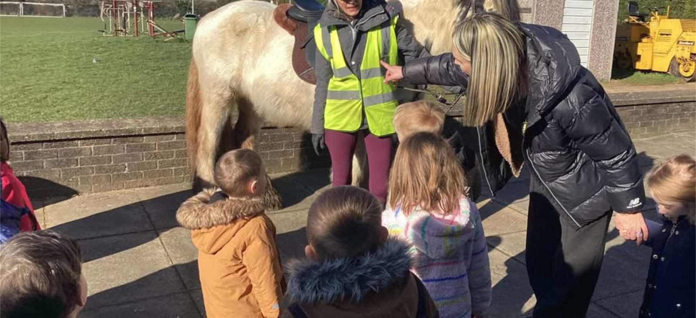
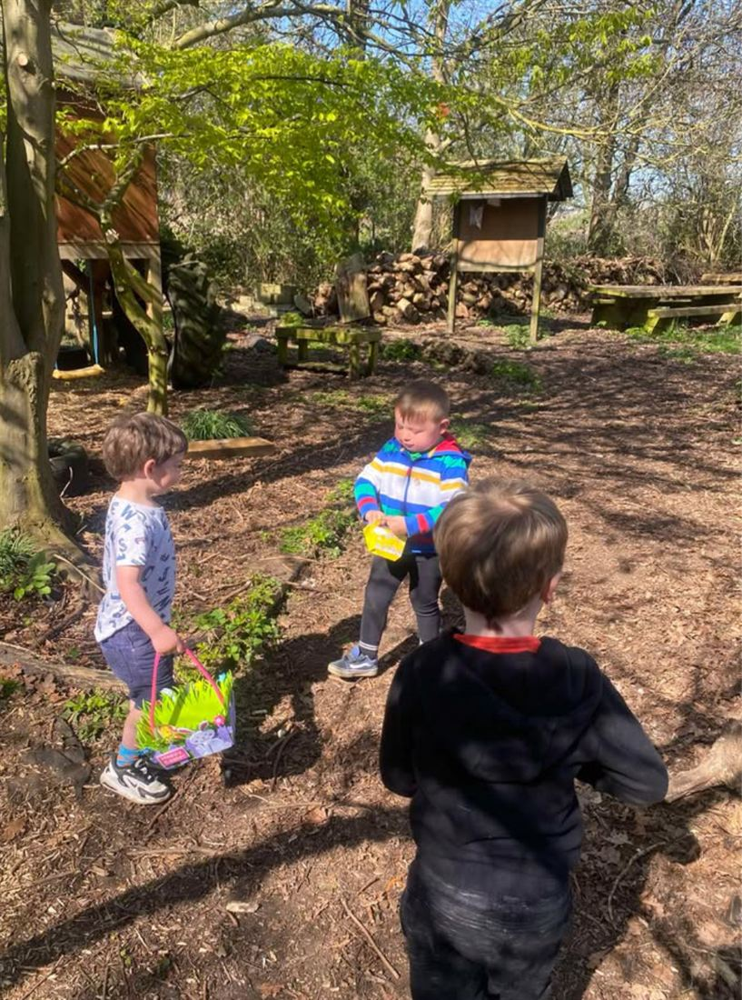
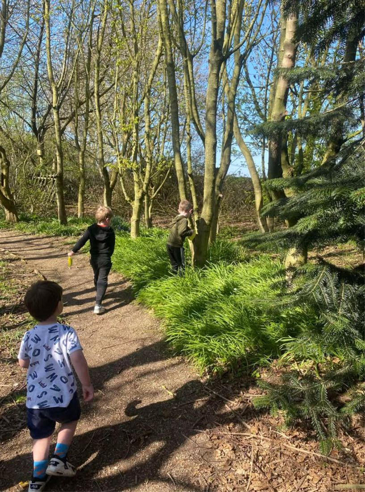

About the pre-school
Leven Pre-School is a committee-run setting based at Leven Sports Hall on North Street. We take children from the age of two up until they start school, with sessions throughout the week in term time.
The way we work is play-based and child-led. For much of the day the children choose what they do, and staff join in to support them and build on what interests them.
We also have a nature park on the site, with trees, paths and dens. The children use it every day for outdoor play, whatever the weather, so bring a coat and wellies.

What we offer
A nature park on site
Our own enclosed outdoor space, used every day for digging, planting, water play and getting outside in all weathers.
Learning through play
Children play at their own pace and staff follow their interests, rather than moving everyone through the same activity at once.
A qualified team
Our team includes qualified early years practitioners and an apprentice working towards Level 3. All staff are trained in first aid and safeguarding.
Come and have a look round
The best way to see the pre-school is to visit while we're open. Give us a call or send us a message and we'll arrange a time that suits you.